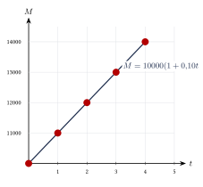

Capítulo 52
Interés simple
IPN CENEVAL
El interés simple se calcula siempre sobre el capital inicial.
Este modelo se utiliza principalmente en operaciones de corto plazo, préstamos, pagarés y problemas financieros elementales.
En este capítulo aprenderás a:
- calcular el interés y el monto;
- despejar el capital, la tasa y el tiempo;
- convertir unidades de tiempo;
- calcular valores presentes y futuros;
- determinar descuentos comerciales;
- distinguir entre interés ordinario y exacto;
- comparar interés simple e interés compuesto.
52.1 Elementos del interés simple#
En una operación de interés simple intervienen:
- Capital \(C\): cantidad inicial prestada o invertida.
- Interés \(I\): ganancia o costo generado por el capital.
- Tasa \(i\): porcentaje del capital que se genera en cada periodo.
- Tiempo \(t\): duración de la operación.
- Monto \(M\): capital más interés.
La relación básica es:
| Símbolo | Significado |
|---|---|
| \(C\) | Capital inicial |
| \(I\) | Interés generado |
| \(i\) | Tasa de interés por periodo |
| \(t\) | Número de periodos |
| \(M\) | Monto o valor final |
52.2 Fórmula del interés simple#
El interés simple se calcula mediante:
El monto es:
Sustituyendo:
Factorizamos el capital:
Por tanto, las dos fórmulas principales son:
y:
La tasa debe escribirse en forma decimal.
Por ejemplo:
Además, la tasa y el tiempo deben utilizar la misma unidad.
Se prestan:
al \(12\%\) anual durante \(3\) años.
Calcula el interés y el monto.
Ver solución
Identificamos:
Calculamos el interés:
Calculamos el monto:
Por tanto, el interés es:
y el monto es:
Se invierten:
al \(9\%\) anual durante \(8\) meses.
Calcula el interés.
Ver solución
La tasa se expresa por año, por lo que convertimos el tiempo:
de año.
Aplicamos la fórmula:
Por tanto:
52.3 Despejes de la fórmula#
A partir de:
pueden obtenerse las demás variables.
52.3.1 Capital#
52.3.2 Tasa#
52.3.3 Tiempo#
A partir de:
el capital es:
| Variable buscada | Fórmula |
|---|---|
| Interés | \(\displaystyle I=Cit\) |
| Capital | \(\displaystyle C=\frac{I}{it}\) |
| Tasa | \(\displaystyle i=\frac{I}{Ct}\) |
| Tiempo | \(\displaystyle t=\frac{I}{Ci}\) |
| Monto | \(\displaystyle M=C(1+it)\) |
| Capital a partir del monto | \(\displaystyle C=\frac{M}{1+it}\) |
No es indispensable memorizar todos los despejes.
Es posible partir de:
y despejar algebraicamente la variable solicitada.
52.4 Cálculo del capital#
¿Qué capital produce un interés de:
al \(10\%\) anual durante \(2\) años?
Ver solución
Identificamos:
Utilizamos:
Sustituimos:
Por tanto:
52.5 Cálculo de la tasa#
Un capital de:
genera un interés de:
en \(18\) meses.
Calcula la tasa anual.
Ver solución
Convertimos el tiempo a años:
Utilizamos:
Sustituimos:
Convertimos a porcentaje:
Por tanto, la tasa fue:
La fórmula produce la tasa en forma decimal.
Para expresarla como porcentaje debe multiplicarse por:
52.6 Cálculo del tiempo#
¿En cuánto tiempo un capital de:
al \(6\%\) anual genera un interés de:
Ver solución
Identificamos:
Utilizamos:
Sustituimos:
Por tanto:
¿En cuántos meses un capital de:
al \(9\%\) anual genera un interés de:
Ver solución
Calculamos el tiempo en años:
Convertimos a meses:
Por tanto:
52.7 Conversión del tiempo#
La tasa y el tiempo deben expresarse en la misma unidad.
Las conversiones principales son:
Si la tasa es anual:
Si se utiliza año comercial:
Si se utiliza año exacto:
| Tiempo dado | Tiempo en años |
|---|---|
| \(6\) meses | \(\displaystyle\frac{6}{12}=0.5\) |
| \(9\) meses | \(\displaystyle\frac{9}{12}=0.75\) |
| \(90\) días comerciales | \(\displaystyle\frac{90}{360}=0.25\) |
| \(45\) días exactos | \(\displaystyle\frac{45}{365}\) |
No debe sustituirse directamente el número de meses en una fórmula con tasa anual.
Por ejemplo, para \(8\) meses y una tasa anual debe utilizarse:
no:
52.8 Valor presente y valor futuro#
El valor presente es la cantidad disponible o invertida actualmente.
Se representa mediante:
El valor futuro es la cantidad que se tendrá al finalizar la operación.
Se representa mediante:
En interés simple:
Despejando:
En este contexto:
y:
¿Cuánto debe invertirse hoy para obtener:
dentro de \(3\) años, con una tasa simple del \(8\%\) anual?
Ver solución
Identificamos:
Utilizamos:
Sustituimos:
Por tanto, deben invertirse aproximadamente:
El valor presente es menor que el valor futuro cuando la tasa y el tiempo son positivos.
52.9 Ecuaciones de valor#
No es correcto sumar directamente cantidades ubicadas en fechas diferentes.
Primero deben trasladarse todos los valores a una misma fecha, llamada fecha focal.
En interés simple, para trasladar un capital hacia el futuro:
Para trasladar un monto hacia el presente:
Una deuda de:
vence hoy. Se acuerda pagarla dentro de \(6\) meses con una tasa simple del \(12\%\) anual.
Calcula el pago equivalente.
Ver solución
Convertimos el tiempo:
Trasladamos la deuda hacia el futuro:
Por tanto, el pago equivalente es:
52.10 Descuento comercial#
El descuento comercial se aplica cuando un documento se cobra antes de su fecha de vencimiento.
Los elementos son:
- Valor nominal \(N\): cantidad escrita en el documento y pagadera al vencimiento.
- Tasa de descuento \(d\): tasa aplicada al valor nominal.
- Tiempo \(t\): tiempo que falta para el vencimiento.
- Descuento \(D\): cantidad retenida o rebajada.
- Valor efectivo \(VE\): cantidad recibida anticipadamente.
El descuento comercial es:
El valor efectivo es:
Sustituyendo:
En algunos textos el valor nominal se representa con \(M\).
En este capítulo utilizamos \(N\) para distinguirlo del monto de una operación de interés simple.
Un pagaré tiene un valor nominal de:
Vence dentro de \(6\) meses y se descuenta al \(12\%\) anual.
Calcula el descuento y el valor efectivo.
Ver solución
Identificamos:
Convertimos el tiempo:
Calculamos el descuento:
Calculamos el valor efectivo:
Por tanto:
y:
En el descuento comercial, la tasa se aplica al valor nominal, no al valor efectivo recibido.
52.11 Despejes del descuento comercial#
A partir de:
se obtiene:
y:
A partir de:
el valor nominal es:
Para que el valor efectivo sea positivo debe cumplirse:
Si:
la operación produciría un valor efectivo nulo o negativo, lo cual no tendría sentido en este modelo elemental.
52.12 Interés ordinario e interés exacto#
Cuando el tiempo se expresa en días, puede utilizarse una de dos convenciones.
52.12.1 Interés ordinario#
Utiliza el año comercial de:
El tiempo es:
donde \(d\) es el número de días.
52.12.2 Interés exacto#
Utiliza el año calendario de:
El tiempo es:
En un año bisiesto puede utilizarse:
| Método | Base anual | Tiempo |
|---|---|---|
| Ordinario o comercial | \(360\) días | \(\displaystyle\frac{d}{360}\) |
| Exacto | \(365\) días | \(\displaystyle\frac{d}{365}\) |
Se invierten:
al \(15\%\) anual durante \(90\) días.
Calcula el interés utilizando año comercial.
Ver solución
El tiempo es:
Aplicamos la fórmula:
Por tanto:
Se prestan:
al \(10\%\) anual durante \(45\) días.
Calcula el interés ordinario y el interés exacto.
Ver solución
Para el interés ordinario:
Para el interés exacto:
La diferencia es:
Por tanto, el interés ordinario supera al exacto en:
Para la misma cantidad de días, capital y tasa, el interés ordinario es ligeramente mayor porque divide entre una base menor:
52.13 Conteo de días#
El tiempo también puede contarse de dos maneras.
52.13.1 Tiempo aproximado#
Se supone que todos los meses tienen:
52.13.2 Tiempo exacto#
Se utilizan los días reales de cada mes.
Las expresiones interés exacto y tiempo exacto no significan lo mismo.
El interés exacto utiliza una base de \(365\) días.
El tiempo exacto utiliza el número real de días transcurridos.
52.14 Comparación con el interés compuesto#
Con interés simple:
Con interés compuesto, si la tasa se capitaliza una vez en cada periodo:
El interés simple produce un crecimiento lineal.
El interés compuesto produce un crecimiento exponencial.
| Característica | Simple | Compuesto |
|---|---|---|
| Base del interés | Capital inicial | Monto acumulado |
| Crecimiento | Lineal | Exponencial |
| Capitalización | No | Sí |
| Monto | \(C(1+it)\) | \(C(1+i)^t\) |
Se invierten:
al \(8\%\) anual durante \(5\) años.
Compara los montos.
Ver solución
Con interés simple:
Con interés compuesto:
La diferencia es:
Por tanto:
Con una tasa positiva y el mismo periodo de capitalización:
- para un periodo, ambos modelos producen el mismo monto;
- para más de un periodo entero, el compuesto produce un monto mayor;
- para periodos fraccionarios, la comparación puede depender de la convención y del modelo utilizado.
52.15 Crecimiento del monto#
En interés simple, el interés generado en cada periodo es constante.
Si:
e:
el interés anual es:
Por ello, los montos son:
El monto aumenta en:
cada año.

52.16 Procedimiento rápido#
- Identifica los datos: \[C,\quad I,\quad i,\quad t,\quad M.\]
- Determina qué variable se solicita.
- Convierte la tasa a forma decimal.
- Convierte el tiempo a la unidad de la tasa.
- Selecciona la fórmula.
- Sustituye los valores con unidades consistentes.
- Despeja si es necesario.
- Redondea las cantidades monetarias a dos decimales.
- Comprueba si el resultado tiene sentido.
Comprobaciones útiles#
- Si: \[i>0 \qquad\text{y}\qquad t>0,\] entonces: \[M>C.\]
- El capital debe ser positivo.
- El tiempo debe ser positivo.
- La tasa obtenida debe convertirse a porcentaje si así se solicita.
- En descuento comercial: \[VE<N.\]
52.17 Resumen#
Interés simple:
Monto:
Monto mediante interés simple:
Capital:
Tasa:
Tiempo:
Valor presente:
Valor futuro:
Descuento comercial:
Valor efectivo:
También:
Tiempo ordinario:
Tiempo exacto:
52.18 Errores frecuentes#
Recuerda:
- La tasa debe escribirse en forma decimal.
- Una tasa del \(12\%\) se escribe: \[0.12,\] no \(12\).
- La tasa y el tiempo deben expresarse en la misma unidad.
- En interés simple, el interés siempre se calcula sobre el capital inicial.
- El monto no es igual al interés: \[M=C+I.\]
- Si la tasa es anual y el tiempo está en meses, debe utilizarse: \[t=\frac{\text{meses}}{12}.\]
- El interés ordinario utiliza una base de \(360\) días.
- El interés exacto utiliza una base de \(365\) días.
- En el descuento comercial, la tasa se aplica al valor nominal.
- El valor efectivo es menor que el valor nominal.
- Para encontrar el valor presente se divide entre: \[1+it.\]
- Los resultados monetarios deben redondearse generalmente a dos cifras decimales.
- No deben compararse cantidades ubicadas en fechas diferentes sin trasladarlas primero a una fecha focal.
52.19 Ejercicios propuestos#
Se prestan:
al \(10\%\) anual durante \(4\) años.
Calcula el interés simple y el monto.
Ver solución
Interés: \(I = \$5{,}000 \times 0.10 \times 4 = \$2{,}000\). Monto: \(\$5{,}000 + \$2{,}000 = \$7{,}000\).
Se invierten:
al \(7.5\%\) anual durante \(2\) años.
Calcula el interés y el monto.
Ver solución
Interés: \(I = \$25{,}000 \times 0.075 \times 2 = \$3{,}750\). Monto: \(\$25{,}000 + \$3{,}750 = \$28{,}750\).
¿Qué capital produce un interés de:
al \(12\%\) anual durante \(2\) años?
Ver solución
Un capital de:
genera un interés de:
en \(18\) meses.
Calcula la tasa anual.
Ver solución
El tiempo es \(18\) meses = \(1.5\) años. \[\$960 = \$8{,}000 \times r \times 1.5 \implies 12{,}000 r = 960 \implies r = 0.08 = 8\%.\]
¿En cuánto tiempo un capital de:
al \(8\%\) anual genera un interés de:
Ver solución
¿Cuánto debe invertirse hoy para obtener:
dentro de \(4\) años, con una tasa simple del \(9\%\) anual?
Ver solución
\[M = C(1+rt) \implies \$30{,}000 = C(1 + 0.09 \times 4) \implies \$30{,}000 = 1.36 C.\] \[C = \frac{\$30{,}000}{1.36} \approx \$22{,}058.82.\]
Una deuda de:
vence hoy. Se acuerda pagarla dentro de \(10\) meses con una tasa simple del \(15\%\) anual.
Calcula el pago equivalente.
Ver solución
Un pagaré con valor nominal de:
vence dentro de \(4\) meses. Se descuenta al \(15\%\) anual.
Calcula el descuento y el valor efectivo.
Ver solución
Descuento: \(D = \$80{,}000 \times 0.15 \times \frac{4}{12} = \$4{,}000\). Valor efectivo: \(\$80{,}000 - \$4{,}000 = \$76{,}000\).
Un documento se descuenta al \(18\%\) anual durante \(5\) meses.
Si el descuento es:
calcula el valor nominal.
Ver solución
Se invierten:
al \(12\%\) anual durante \(120\) días.
Calcula el interés:
- utilizando año comercial;
- utilizando año exacto.
Ver solución
- Comercial: \(I = \$18{,}000 \times 0.12 \times \frac{120}{360} = \$720\).
- Exacto: \(I = \$18{,}000 \times 0.12 \times \frac{120}{365} \approx \$710.14\).
Se invierten:
al \(6\%\) anual durante \(3\) años.
Calcula:
- el monto con interés simple;
- el monto con interés compuesto anual;
- la diferencia entre ambos montos.
Ver solución
- Interés simple: \(M = \$10{,}000(1 + 0.06 \times 3) = \$11{,}800\).
- Interés compuesto: \(M = \$10{,}000(1.06)^3 \approx \$11{,}910.16\).
- Diferencia: \(\$11{,}910.16 - \$11{,}800 = \$110.16\).
Una persona invierte:
al \(10\%\) anual simple.
¿Cuánto tiempo debe mantener la inversión para obtener un monto de:
Ver solución
Un capital de:
se convierte en:
en \(18\) meses mediante interés simple.
Calcula la tasa anual.
Ver solución
El tiempo es \(1.5\) años. \[\$16{,}100 = \$14{,}000 (1 + r \times 1.5) \implies 1.15 = 1 + 1.5 r \implies 1.5 r = 0.15 \implies r = 0.10 = 10\%.\]
Un pagaré de:
se descuenta \(75\) días antes de su vencimiento con una tasa de descuento del \(16\%\) anual.
Utiliza un año comercial y calcula:
- el descuento;
- el valor efectivo.
Ver solución
- Descuento: \(D = \$60{,}000 \times 0.16 \times \frac{75}{360} = \$2{,}000\).
- Valor efectivo: \(\$60{,}000 - \$2{,}000 = \$58{,}000\).
Las soluciones se encuentran al final de la guía, en el apéndice Soluciones a los ejercicios, sección Capítulo 52.